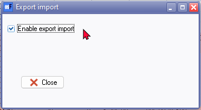
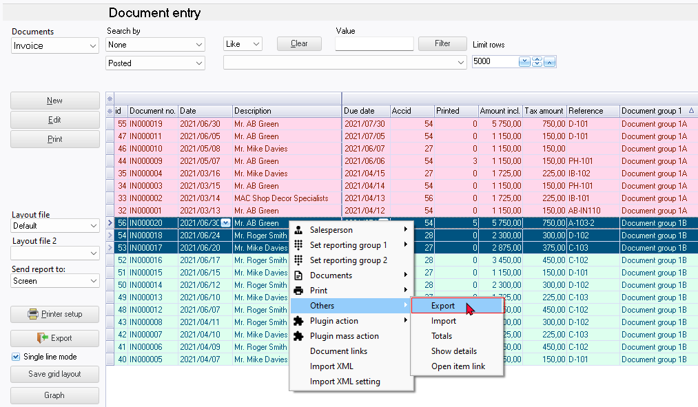
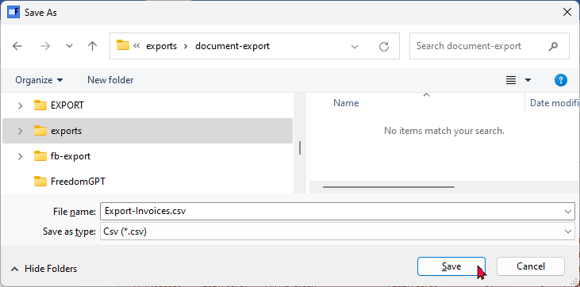
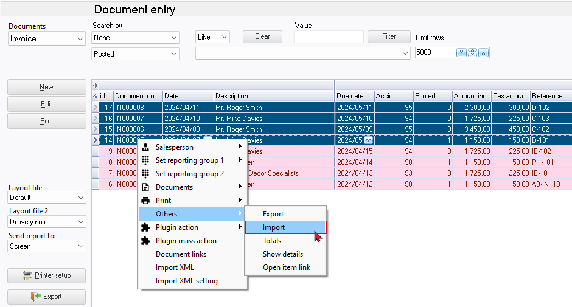
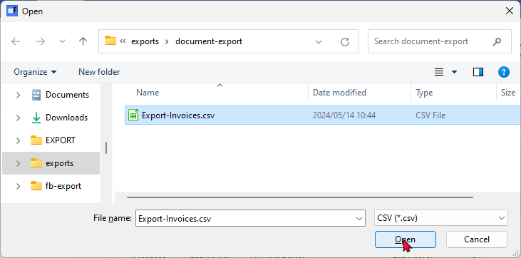
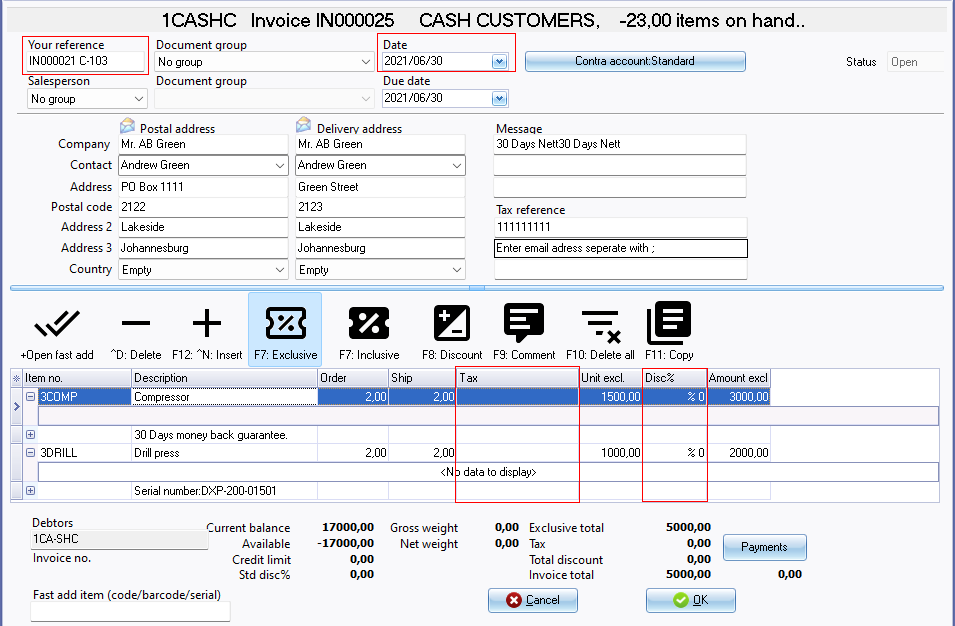
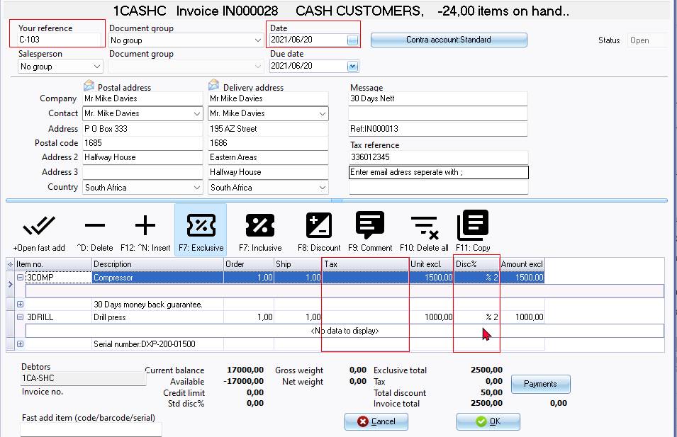

Document Export / Import plugin
Document Export / Import plugin
|
Document Export / Import plugin - Manual - Shop - Licence: Once-off Documentation : Help documentation |
The Document Export/Import plugin offers a convenient method for exporting and importing documents in osFinancials. It enhances the functionality by adding an additional context menu item under Other options → Export to facilitate the export of selected documents or multiple documents from the Documents grid.
Activation
To activate the Document Export / Import plugin:
- Navigate to Plugins → Document plugins → Document Export / Import (Setup ribbon). If this plugin is not listed under Plugins → Document plugins, activate it via Tools → Activate plugins.

- Select "Enable export import"
- Click the Close button
Exporting documents
To Export documents:
- Select the document type (e.g., invoices, credit notes, quotes, purchases, supplier returns, orders) on the documents grid. Utilize the filter and search options to narrow down documents based on specific criteria.
- Choose the document(s) you wish to include in the export file.
- Access the additional context menu item under Other options → Export to initiate the export process.

- On the "Save as" screen, the default option is the Comma Separated Value (CSV) file format. Alternatively, you can select the TurboCASH exchange file (TXF) format.

- Provide a file name for your export and click the Save button.
Importing documents
To importing documents:
- Select the appropriate document type (e.g., invoices, credit notes, quotes, purchases, supplier returns, orders) on the documents grid.
- Navigate to the context menu item under Other options → Import to choose the export file.

- On the "Open" screen, locate the exported document file. If necessary, select the CSV or TXF file format.

- Click the Open button. The imported document(s) will be available as unposted documents.
- If a sales document type is selected, you'll be directed to the "Debtor accounts" screen to choose a debtor account. For purchase document types, the "Creditor accounts" screen will appear for selecting a creditor account.
After import
After importing documents, you may need to make edits before updating (posting) them to the ledger. Depending on the source of the exported documents and/or the file format (CSV or TXF), pay special attention to the following:
- Changing Debtor or Creditor Accounts: The first document, if multiple documents are imported, may be assigned to the selected account. Subsequent documents included in the exported file may be imported to existing accounts. If an incorrect debtor or creditor account was selected and included in the exported file, you can select the document and choose another debtor or creditor account from the Documents → Change account context menu.
- Adjusting Salesperson, Document Groups, and Messages: You have the flexibility to modify the salesperson, document groups, and messages in the document header as needed.
- Date: The date of the imported documents may reflect the date of the source document included in the exported file. You may need to change this to the system date or a date according to your requirements.
- References:
- In the case of importing an exported file from the TXF file format, the source document number from the exported file may be appended to the "Your reference" field before existing references.
- In the case of an exported file from the CSV file format, the source document number from the exported file will not be appended to the "Your reference" field.
- Selling Prices, Purchase Prices, and Quantities: These can be adjusted as necessary. Additional items can be added or existing ones removed from the imported document.
- Discount Percentage:
- In the case of importing an exported file from the TXF file format, no discount percentage will be included.
- In the case of importing an exported file from the CSV file format, a discount percentage (e.g., 2%) may be included. If no discount applies, set this to 0 or add a specific percentage according to your requirements.
- Tax (VAT/GST/Sales Tax): Confirm and select the correct output tax or input tax applicable to the imported items.
- Comments and Remarks: Comments will be imported, but remarks will not. Add remarks if necessary, especially for special references like serial numbers, guarantees, or warranties.
Examples of Imported Documents in the TXF and CSV File Formats
To better understand how imported documents appear in different file formats, view the examples below:
Example: Imported Invoice in TXF File Format:

Example: Imported Invoice in CSV File Format:

These examples provide visual representations of how invoices look when imported from different file formats. Understanding these differences can aid in effectively managing imported documents within your Set of Books.